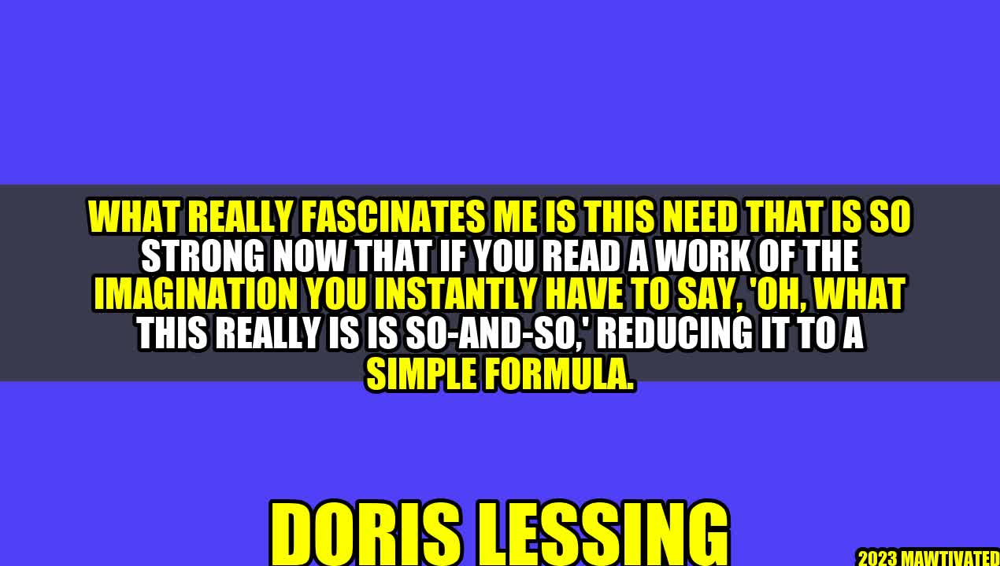

The Need to Reduce Imagination to Simple Formulas - Doris Lessing

Have you ever read a book or watched a movie that left you feeling awestruck by the author's or director's imagination? Have you found yourself trying to explain the plot or the characters to someone else, only to realize that it's not so easy to put into words? If so, you might relate to what Doris Lessing expressed in the following quote:
"What really fascinates me is this need that is so strong now that if you read a work of the imagination you instantly have to say, 'Oh, what this really is is so-and-so,' reducing it to a simple formula."
Doris Lessing was a British novelist, poet, and playwright who won the Nobel Prize in Literature in 2007. She was known for her exploration of political and social issues, as well as her feminist stance. In this quote, she touches on something that many of us may have observed in our own lives. Why do we have such a strong need to reduce imagination to simple formulas?
Examples of Reducing Imagination to Simple Formulas
Before we delve into the reasons behind this phenomenon, let's first examine some examples of it.
After watching the movie Inception, someone might say, "Oh, it's just a movie about dreams within dreams."
After reading the novel 1984, someone might say, "Oh, it's just a book about a dystopian future where the government controls everything."
After listening to a piece of music, someone might say, "Oh, it's just a song with a catchy beat and some simple lyrics."
In each of these cases, the person is reducing a complex work of imagination to a simple formula that can be easily categorized and understood. But why do we do this?
The Reasons Behind the Need to Reduce Imagination to Simple Formulas
There are several possible reasons why we might feel the need to reduce imagination to simple formulas:
The desire for control: By reducing something complex to a simple formula, we feel like we have more control over it. We can categorize it, label it, and understand it in a way that feels manageable.
The need for validation: By reducing something complex to a simple formula, we can also feel like we're part of a group of people who "get it." If we can distill something down to a few key elements that everyone can agree on, it can be a way of validating our own understanding of the work.
The fear of the unknown: Imagination can be a scary thing. It often takes us to places we've never been before and presents us with ideas that challenge our existing beliefs and values. By reducing imagination to simple formulas, we can avoid some of this discomfort and uncertainty.
While these reasons may be understandable, they can also prevent us from fully appreciating and exploring the complexities of imagination. By reducing something to a simple formula, we may miss out on the depth and richness of the work.
Practical Tips for Avoiding the Need to Reduce Imagination to Simple Formulas
If you want to fully appreciate the complexities of imagination, here are a few tips:
Engage with the work on its own terms: Instead of trying to fit the work into preconceived categories or formulae, try to engage with it on its own terms. What is it trying to communicate? What emotions or ideas is it eliciting in you?
Be open to uncertainty: Imagination is often uncertain and ambiguous. Instead of shying away from this uncertainty, try to embrace it. See it as an opportunity to explore new ideas and challenge your existing beliefs.
Share your experience with others: Instead of reducing the work to a simple formula, try to share your experience of it with others. What did you find interesting or thought-provoking about it? By engaging in a dialogue with others, you may find new insights and perspectives.
Conclusion
In conclusion, the need to reduce imagination to simple formulas is a common phenomenon that can prevent us from fully appreciating the complexity and richness of creative works. However, by engaging with the work on its own terms, embracing uncertainty, and sharing our experiences with others, we can deepen our understanding and connection to imagination.
Imagination is a complex and rich phenomenon that often eludes easy categorization.
The desire for control, the need for validation, and the fear of the unknown are all possible reasons why we might feel the need to reduce imagination to simple formulas.
By engaging with the work on its own terms, embracing uncertainty, and sharing our experiences with others, we can deepen our understanding and connection to imagination.
Curated by Team Akash.Mittal.Blog
Share on Twitter Share on LinkedIn